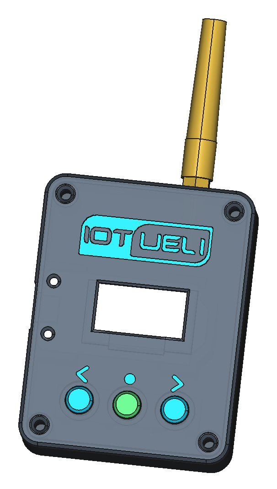
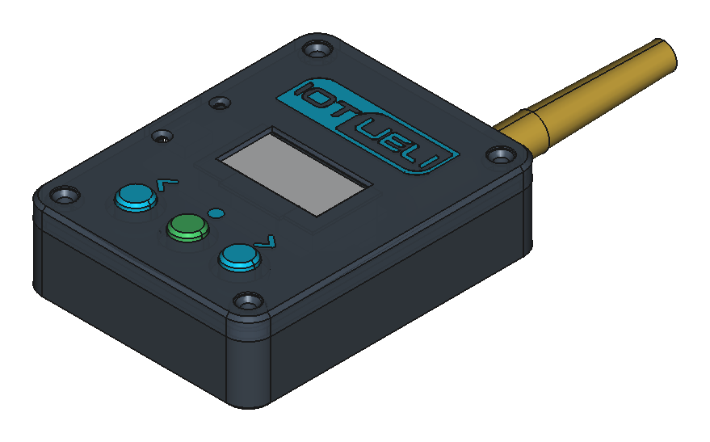
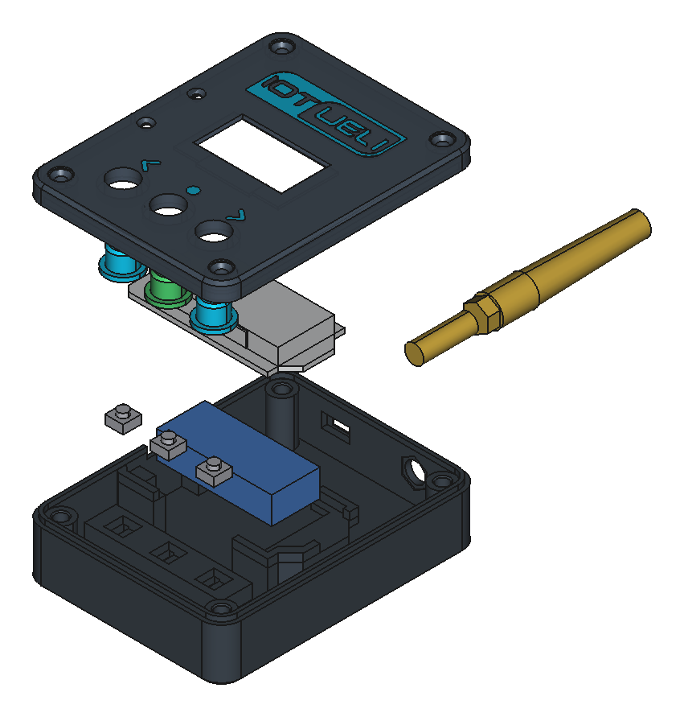
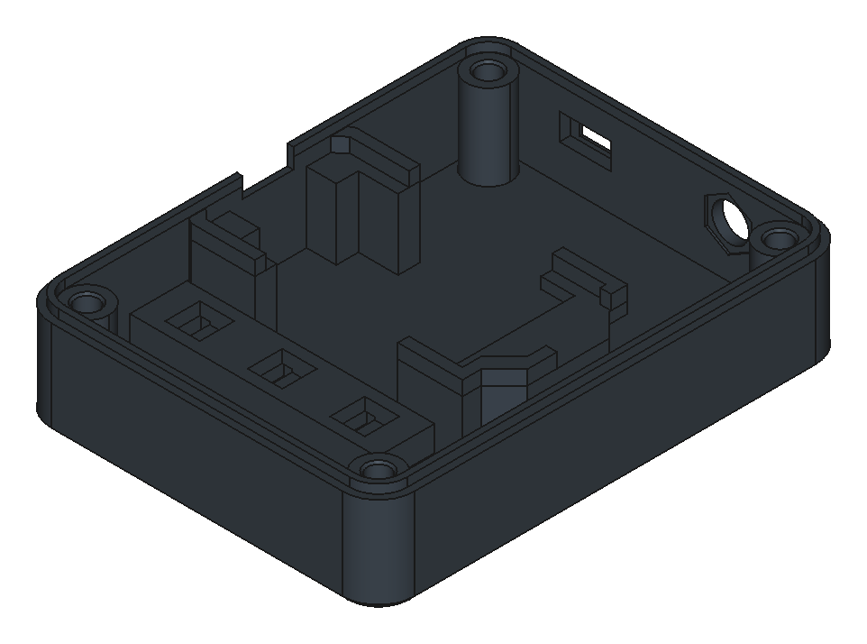
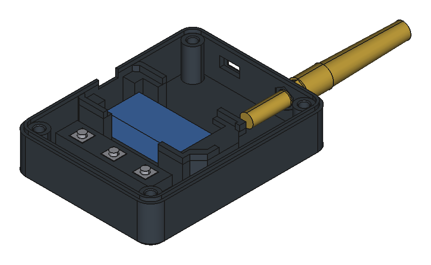
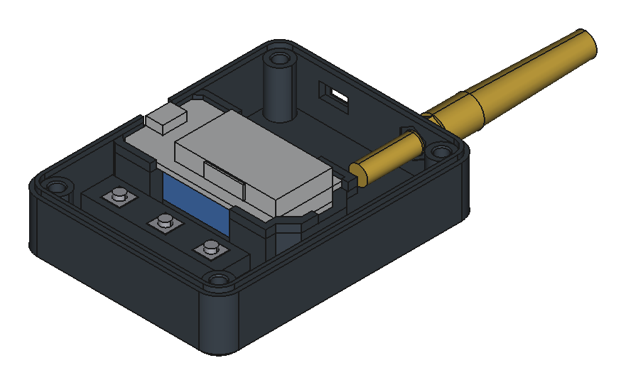
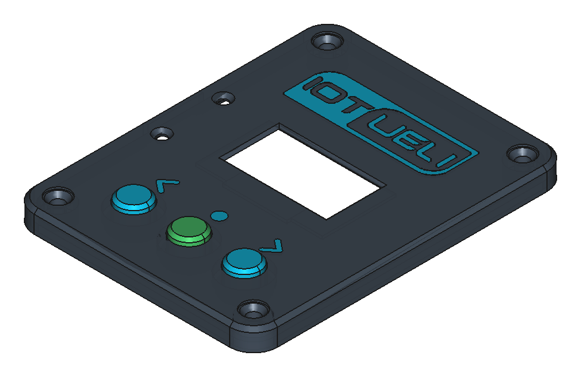

Tragbarer 868 MHz LoRaWAN-Netzwerk-Tester (Swisscom, TTN, Dragino), 2.4 GHz WLAN-Scanner & Bluetooth-BLE-Finder auf Basis des Heltec WiFi LoRa 32 V2.
🌐 Projekt, Firmware & IoT-Lösungen auf www.iotueli.ch


| Anz. | Bauteil | Details / Einbaumaße |
|---|---|---|
| 1× | Heltec WiFi LoRa 32 V2 | ESP32 (WiFi/BLE) + SX1276 (868 MHz) + 0.96" OLED (52 × 25.33 mm) |
| 1× | SMA-Buchse + Antenne | U.FL auf SMA-Einbaubuchse (18 mm Innentiefe) + 868 MHz Antenne |
| 3× | Kurzhubtaster 6×6 mm | 4-Pin Taster, Körper 6×6×2.9 mm + Knopf Ø 3.5×1.5 mm (4.4 mm gesamt) |
| 4× | M3 Einschmelzgewinde | Ø 4.0 mm Außendurchmesser, Länge 4–6 mm (Sackloch 7 mm tief) |
| 4× | M3 × 8 mm Schrauben | Zylinderkopf / Innensechskant (bündig versenkt im Deckel) |
| 1× | 1S LiPo-Akku + Schalter | Optional: 3.7 V LiPo (JST 1.25 mm) + Schiebeschalter SS12D00 |
cad/export/)| Datei | Beschreibung & Farbzuweisung |
|---|---|
LoraWanFinder_BambuLab_Platte.3mf | Zweifarbige Bambu-Studio-Platte (alle Teile druckfertig orientiert, 0 % Stützstruktur, Extruder 1 & 2 vorkonfiguriert) |
Gehaeuse_Unten.stl | Farbe 1: Unterteil mit 26 mm Kabel-Durchgang & großem Antennenraum |
Gehaeuse_Oben.stl | Farbe 1: Deckel-Hauptkörper (ohne störende Innenstege über den Pins) |
Logo_und_Tasten_Farbe2.stl | Farbe 2: Bündiges 0.60 mm Inlay für IoTUeli-Logo & Symbole ‹ • › |
Taster_Kappe.stl | Farbe 2: 3× drucken – Unterseite 100 % flach für vollen Tastenhub |
LoraWanFinder_BambuLab_Platte.3mf. Der Deckel (Gehaeuse_Oben) liegt mit der Sichtseite nach unten auf dem Druckbett und besteht bereits aus zwei Teilkörpern: Deckel_Hauptkoerper (Filament 1, z. B. Anthrazit/Schwarz) und IoTUeli_Logo_und_Tasten (Filament 2, z. B. Cyan/Weiß). Da das Inlay exakt 0.60 mm hoch ist (3 Schichten à 0.20 mm), sind nur in den ersten 3 Schichten Farbwechsel nötig – komplett ohne Stützstruktur (Support: AUS)!
Die 3 Kurzhubtaster (Links ‹, Mitte ●, Rechts ›) schalten gegen GND (interne Pull-Up-Widerstände im ESP32 sind aktiv). Durch den neuen 26 mm breiten Kabel-Durchgang im Unterteil und den freien Raum im Deckel können die Drähte wahlweise von oben oder unten an das ESP32 gelötet und direkt unter der Platine durchgeführt werden.
Pin 1 ↔ Pin 2 und unten Pin 3 ↔ Pin 4). Erst beim Drücken des Knopfes werden die obere und untere Schiene verbunden.Pin 2 und Pin 3) bleiben einfach frei (oder können optional abgezwickt werden).Pin 1 = GND und unten rechts Pin 4 = GPIO 12 / 13 / 32). Bei diagonalem Anschluss funktioniert der Taster immer – selbst wenn er um 90° gedreht eingesetzt wurde!Pin 1 und Pin 2 im Taster bereits intern verbunden sind, kannst du das schwarze GND-Kabel auch bei Pin 1 anlöten und von Pin 2 direkt zum nächsten Taster weiterschleifen.Gehaeuse_Unten) einschmelzen.J = 47.80 mm mit 45°-Schrägen) das ESP32 exakt stützen.
GPIO 12 (Links), GPIO 13 (Mitte) und GPIO 32 (Rechts) anlöten.
GND, GPIO 12, 13, 32) einfach von oben in den 26 mm breiten Durchgang unter dem ESP32 legen.
Taster_Kappe.stl) von innen durch die drei Löcher im Deckel (Gehaeuse_Oben) stecken.
Nach dem Einschalten zeigt das Gerät für 2.5 Sekunden das IoTUeli.ch-Startlogo. Danach bedienst du alle 5 Funktions-Seiten kinderleicht mit den 3 Tastern (ohne komplizierten Langdruck):
| Taster | Symbol am Deckel | GPIO | Funktion (auf allen 5 Seiten identisch!) |
|---|---|---|---|
| Taster LINKS | [ ‹ ] | GPIO 12 | Eine Seite zurückblättern (1/5 ➔ 5/5 ➔ 4/5 ➔ 3/5 ➔ 2/5 ➔ 1/5) |
| Taster RECHTS | [ › ] | GPIO 32 | Eine Seite weiterblättern (1/5 ➔ 2/5 ➔ 3/5 ➔ 4/5 ➔ 5/5) |
| Taster MITTE | [ ● ] | GPIO 13 | Aktion starten: Führt immer genau den Befehl aus, der unten in der Mitte in [...] auf dem Display steht! |
Zeigt das zuletzt empfangene echte 868-MHz-LoRa-Paket in Prozent (0–100 %), dBm und Alter (vor 2s).
Mitte [ ● ]: Startet eine 3-Sekunden-Messung über alle Hauptkanäle.
Speichert bis zu 10 gefundene LoRaWAN-Netze/Sender (SWISSCOM, TTN/DRAG, DRAGINO, HELIUM, PRIVAT).
Mitte [ ● ]: Blättert durch alle gefundenen LoRaWAN-Sender!
Mitte [ ● ]: Sendet 3 LoRaWAN-Testpakete (Adresse 2601CAFE) auf 868.1, 868.3 und 868.5 MHz und horcht anschließend im Gateway-Downlink-Modus (invertIQ) auf Antwort.
Scannt alle 2.4-GHz-WLANs in Reichweite und zeigt oben die gefundene Anzahl, den WLAN-Namen (SSID) sowie die Signalbewertung.
Mitte [ ● ]: Blättert durch alle gefundenen WLANs (1:, 2:, 3: …) und startet am Ende der Liste eine neue Suche.
Findet aktive Bluetooth-Low-Energy-Geräte (Sensoren, Beacons, Tracker, Smartphones) samt Gerätename bzw. MAC-Kennung und Signalbewertung.
Mitte [ ● ]: Blättert durch alle BLE-Geräte und scannt am Ende neu.
| Anzeige-Urteil | LoRa 868 MHz | WLAN / BLE | Bedeutung für den Einsatz |
|---|---|---|---|
SEHR GUT! | ab -85 dBm (65–100%) | ab -67 dBm | Optimal! Minimaler Batterieverbrauch (SF7), hohe Reserve. |
GUT (OK) | -86..-104 dBm (20–65%) | -68..-78 dBm | Ausreichend! Zuverlässiger Normalbetrieb im Gebäude/Freien. |
SCHWACH | -105..-112 dBm (5–20%) | -79..-88 dBm | Knapp! LoRa klappt nur mit SF10–SF12; Antenne besser positionieren. |
RUHE / 0% | unter -112 dBm (0%) | – | Aktuell sendet kein Gerät (normales Grundrauschen). |
1/5 & 2/5 erscheint sofort das Netz + Signalstärke.3/5 LORA-TEST die Taste Mitte [SENDEN!] → im Web-Interface deines Dragino-Gateways siehst du sofort das Testpaket 2601CAFE samt Empfangspegel!